SENA Certificación
App
Guía práctica para cargar, validar, consolidar y consultar la información del proceso de certificación de aprendices.
Ir directamente a una sección
Navegación
Tabla de contenidos
Índice completo de las secciones del manual.
Referencia visual
Tabla de ilustraciones
Lista ordenada de las capturas de pantalla que debe tomar y colocar en la carpeta img/.
| Archivo | Descripción / qué capturar | Sección |
|---|---|---|
img/captura01.png | Barra lateral (rail) de navegación completa, con las opciones visibles | F1 |
img/captura02.png | Vista principal «Cargar información» (pantalla inicial vacía o lista para importar) | F2 |
img/captura03.png | Selección de tipo de fuente / zona de carga de archivo (DF14A, Acta, Requisitos, ACTAS 2026…) | F2 |
img/captura04.png | Vista previa de importación (resumen de registros, advertencias y botones Confirmar / Cancelar) | F3 |
img/captura05.png | Banner o mensaje de importación completada con éxito | F3 |
img/captura06.png | Vista previa mostrando conflictos o advertencias de coherencia | F3 / F4 |
img/captura07.png | Panel o modal de resolución de conflictos (CERTIFICADOS vs PENDIENTES) | F4 |
img/captura08.png | Botón y panel de Google Sheets (campo de URL y botón Sincronizar) | F5 |
img/captura09.png | Estado de sincronización de Google Sheets (éxito, sin cambios o conflicto pendiente) | F5 |
img/captura10.png | Listado de aprendices (tabla con columnas y paginación) | F6 |
img/captura11.png | Filtros activos: buscador, selector de estado y chips de estado | F6 |
img/captura12.png | Ficha / detalle de un aprendiz (datos básicos) | F7 |
img/captura13.png | Sección de requisitos del aprendiz (pendientes o historial) | F7 |
img/captura14.png | Listado de actas | F8 |
img/captura15.png | Detalle de un acta con aprendices asociados | F8 |
img/captura16.png | Vista de indicadores (resumen de avance / métricas principales) | F9 |
img/captura17.png | Vista Informe de gestión: selector de año/trimestre y pestañas | F10 |
img/captura18.png | Pestaña Estrategias / actividades (editores de texto y contexto de cifras) | F10 |
img/captura19.png | Pestaña Anexos (formulario de carga e listado ordenable) | F10 |
img/captura20.png | Pestaña Exportar: modo de cálculo y botón Generar DOCX | F10 |
img/ junto a este index.html.2. Tome las capturas de la aplicación en el orden indicado.
3. Guárdelas exactamente con los nombres
captura01.png … captura20.png (PNG recomendado).4. Al abrir el manual en el navegador, las imágenes aparecerán automáticamente en su lugar.
Primeros pasos
Introducción
SENA Certificación App es una aplicación web de uso local diseñada para centralizar el seguimiento administrativo del proceso de certificación de aprendices. Permite cargar archivos oficiales (actas, DF14A, libros de seguimiento tipo ACTAS 2026 y matrices de requisitos), validarlos, consolidar la información de cada aprendiz y consultar indicadores de avance.
Antes de esta herramienta, la información se encontraba dispersa en múltiples archivos con formatos distintos. Eso generaba duplicados, omisiones, revisiones manuales lentas y poca trazabilidad. La aplicación unifica ese flujo en un solo lugar: cargar → validar → confirmar → consultar → reportar.
Primeros pasos
Recomendaciones de uso
- Trabaje siempre con archivos actualizados exportados desde las fuentes oficiales (SOFIA Plus, actas firmadas, consolidado ACTAS 2026).
- Revise la vista previa antes de confirmar cualquier importación. Es el momento de detectar duplicados, conflictos o datos incompletos.
- Resuelva los conflictos CERTIFICADOS / PENDIENTES de forma consciente: la decisión afecta los indicadores y el estado del aprendiz.
- Si usa sincronización con Google Sheets, configure la hoja como «Cualquier persona con el enlace → Lector» y no espere que la aplicación corrija filas en la hoja (solo lee).
- Conserve copias de seguridad de los archivos fuente y, si es necesario, de la base de datos local generada por la aplicación.
- Use un navegador actualizado (Chrome, Edge o Firefox) y una resolución de pantalla cómoda para trabajar con tablas y filtros.
Primeros pasos
Objetivos del manual
Al finalizar la lectura de este manual usted podrá:
- Identificar las secciones principales de la interfaz y moverse entre ellas con seguridad.
- Cargar y validar archivos de las fuentes admitidas (DF14A, actas, requisitos, ACTAS 2026).
- Interpretar la vista previa de importación y confirmar o cancelar de forma controlada.
- Resolver conflictos cuando un aprendiz aparece a la vez en CERTIFICADOS y PENDIENTES.
- Configurar y usar la sincronización con Google Sheets.
- Consultar, filtrar y revisar el detalle de aprendices y sus requisitos.
- Registrar y consultar actas, y asociar aprendices de forma fiable.
- Consultar los indicadores de avance de certificación.
Primeros pasos
¿A quién va dirigido?
Este manual está orientado a:
Personal de Administración Educativa
Quienes consolidan actas, pendientes y certificados y elaboran el seguimiento del período.
Coordinación académica
Quienes revisan listados de aprendices «Por certificar» y la relación con actas oficiales.
Instructores de seguimiento
Quienes consultan el estado de requisitos y evidencias de sus aprendices (según el alcance de uso).
Soporte / desarrollo
Quienes instalan, actualizan o acompañan el uso de la aplicación en el centro.
Primeros pasos
Lo que debo conocer
Conceptos y requisitos mínimos antes de usar la aplicación.
Conceptos clave del proceso
- DF14A: archivo estructurado exportado desde SOFIA Plus con el resumen de matriculados por ficha y estados (Por certificar, Certificado, etc.).
- Acta de certificación: documento oficial (PDF o DOCX) con el listado de aprendices que cumplen requisitos para iniciar el trámite.
- ACTAS 2026 (o libro de seguimiento): Excel institucional con hojas CERTIFICADOS, PENDIENTES, COMPLEMENTARIA y META.
- Por certificar: estado del aprendiz que ya puede iniciar el trámite de certificación (no implica que el certificado ya esté expedido).
- Conflicto CERTIFICADOS / PENDIENTES: un mismo documento aparece en ambas hojas; debe resolverse de forma explícita.
Requisitos técnicos
Navegador
Chrome, Edge o Firefox actualizado. La interfaz se abre en http://127.0.0.1:8000 (o el puerto que indique el lanzador).
Archivos de entrada
Formatos admitidos: XLSX, XLS, CSV, XML, PDF y DOCX, según el tipo de información seleccionado.
Google Sheets (opcional)
Hoja compartida como «Cualquier persona con el enlace → Lector» para poder descargar el XLSX público.
Entorno de ejecución
Aplicación local (Python/FastAPI o ejecutable de demo). No requiere servidor en la nube.
Interfaz principal y navegación
Conozca las secciones de la aplicación y cómo moverse entre ellas.
Al abrir la aplicación verá una barra lateral estrecha (rail) a la izquierda con iconos y etiquetas. Cada opción lleva a una vista distinta del sistema.
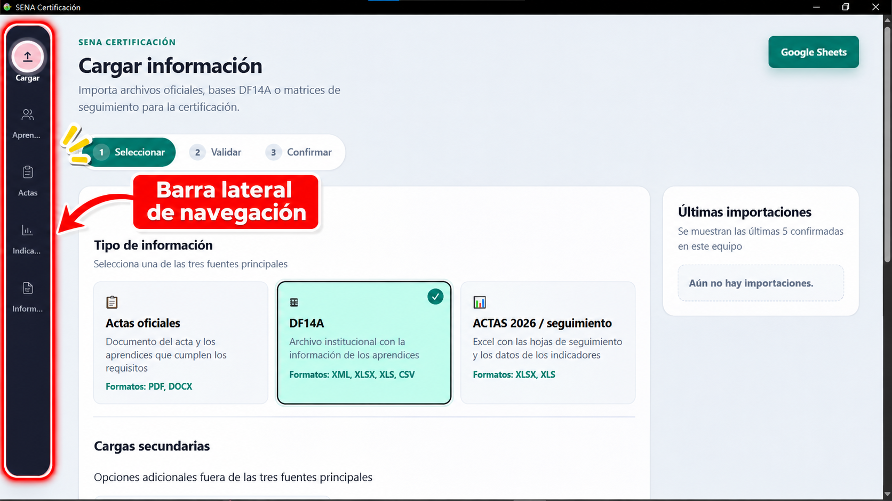
Secciones principales
- Cargar información: importación de archivos y sincronización con Google Sheets.
- Aprendices: listado, búsqueda, filtros y ficha de detalle.
- Actas: registro, consulta y vinculación de aprendices a actas oficiales.
- Indicadores: avance de certificación, métricas por período y desgloses.
- Informe de gestión: redacción de estrategias, anexos y generación del DOCX oficial (ver F10).
Cargar información (archivos locales)
Cómo importar DF14A, actas, requisitos y el consolidado ACTAS 2026.
Desde la vista Cargar información puede seleccionar el tipo de fuente e indicar el archivo a procesar. La aplicación valida la estructura y el contenido antes de modificar la base de datos.
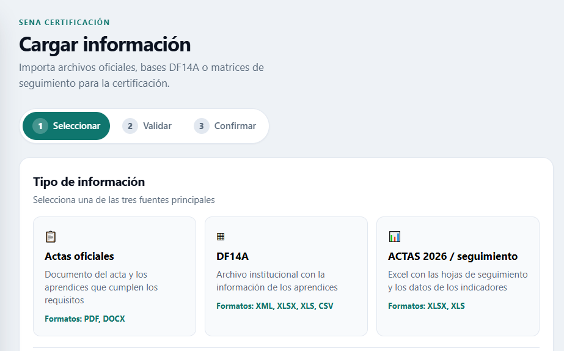
Fuentes admitidas
- DF14A — listado base de aprendices desde SOFIA Plus.
- Acta de certificación — PDF o DOCX oficiales.
- Requisitos / pendientes — matrices de requisitos o listados de pendientes.
- ACTAS 2026 / seguimiento — libro Excel con hojas CERTIFICADOS, PENDIENTES, COMPLEMENTARIA y META.
- Otro archivo — para casos que no encajan en las categorías anteriores (según reglas de validación).
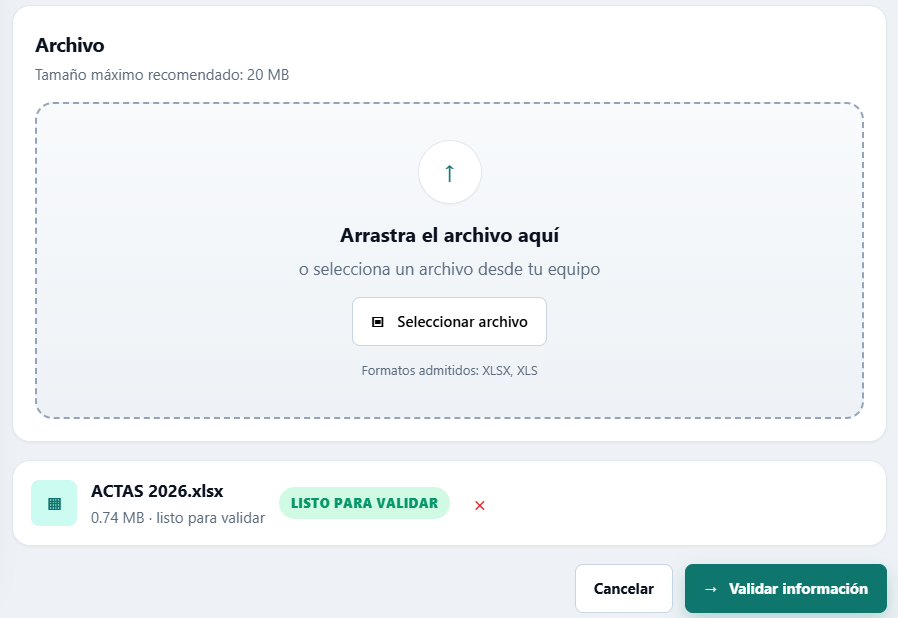
Pasos para cargar un archivo
Vista previa y confirmación de importación
Revise qué se importará, las advertencias detectadas y confirme o cancele.
Después de una validación exitosa, el sistema muestra una vista previa con el resumen de registros nuevos o actualizados, advertencias (por ejemplo duplicados) y, si aplica, conflictos de coherencia entre CERTIFICADOS y PENDIENTES.
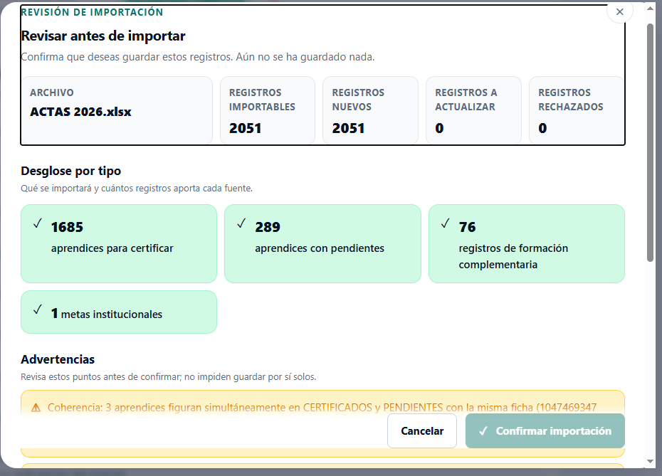
Qué revisar en la vista previa
- Cantidad de registros nuevos y actualizados.
- Advertencias (filas duplicadas, datos incompletos, niveles no clasificados, etc.).
- Conflictos de estado (mismo documento en CERTIFICADOS y PENDIENTES).
- Ausencia de hojas esperadas (por ejemplo COMPLEMENTARIA), cuando el archivo es un consolidado.
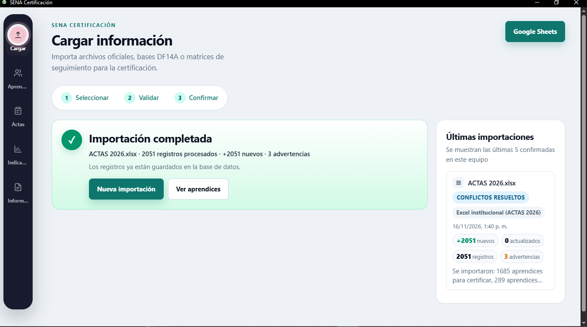
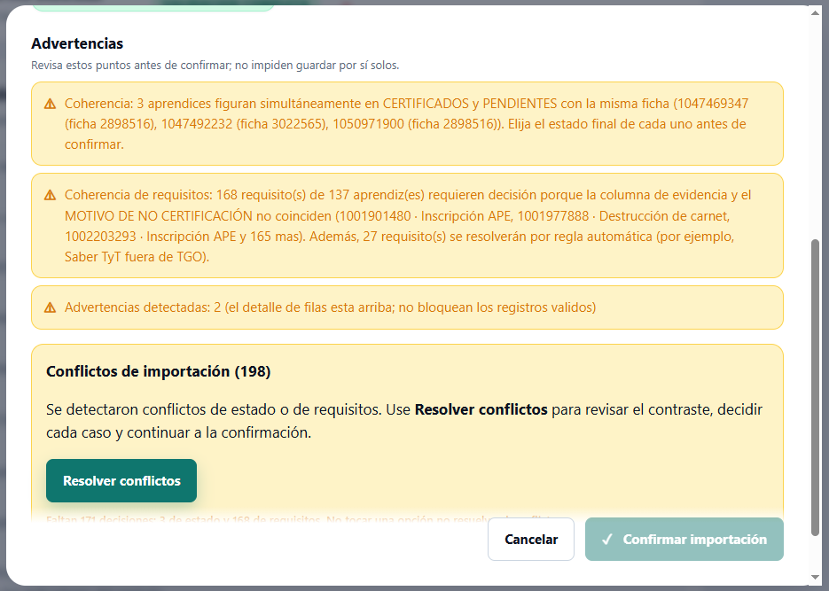
Resolución de conflictos CERTIFICADOS / PENDIENTES
Cómo actuar cuando un mismo aprendiz aparece en ambas hojas del consolidado.
Un conflicto ocurre cuando el mismo número de documento está a la vez en la hoja CERTIFICADOS y en la hoja PENDIENTES. El sistema no asume automáticamente cuál es el estado correcto: le pide una decisión explícita (desempate).
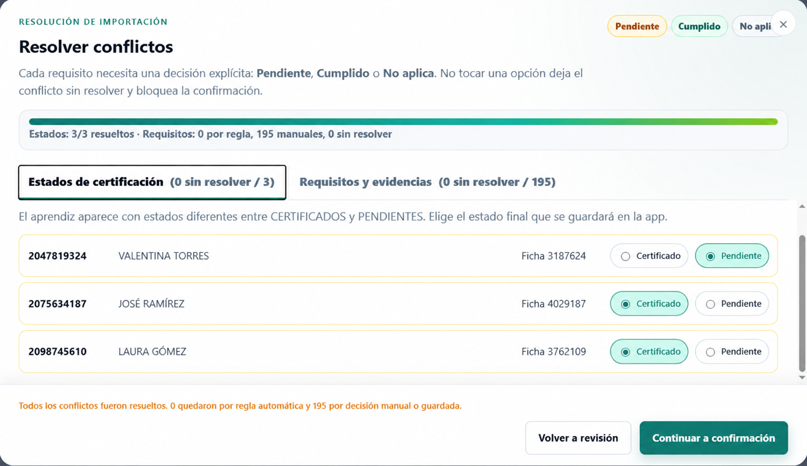
Cómo resolver un conflicto
Sincronización con Google Sheets
Conecte un consolidado compartido para actualizar datos de forma periódica.
En la vista Cargar información puede usar el botón Google Sheets para pegar la URL de una hoja compartida públicamente (permiso de lector). La aplicación descarga el XLSX, calcula un hash y, si hubo cambios, prepara la importación con las mismas reglas que un archivo local.
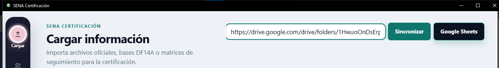
Pasos para sincronizar
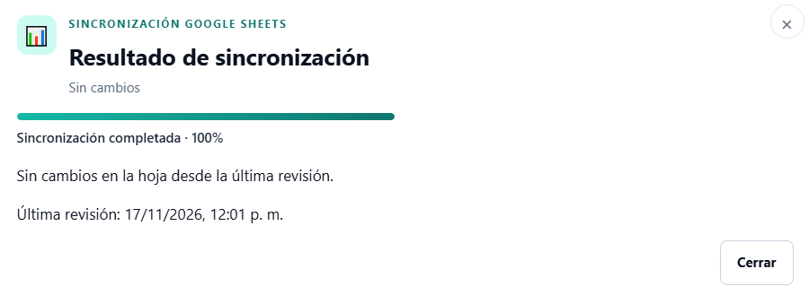
Consultar y filtrar aprendices
Listado consolidado, búsqueda y filtros por estado o requisitos.
La vista Aprendices muestra el registro consolidado almacenado en la base local. Cada fila corresponde a un aprendiz identificado de forma única por su número de documento.
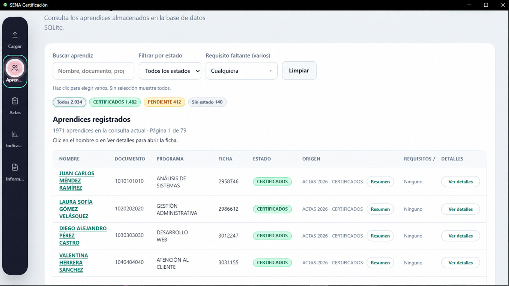
Filtros y búsqueda
Puede combinar:
- Buscador: nombre, documento, programa, ficha o estado.
- Estado de certificación: por ejemplo «Por certificar», «Certificado», etc.
- Requisitos faltantes: filtrar por tipos de requisito pendientes (cuando esté disponible).
- Chips de estado: accesos rápidos para filtrar por los estados más usados.
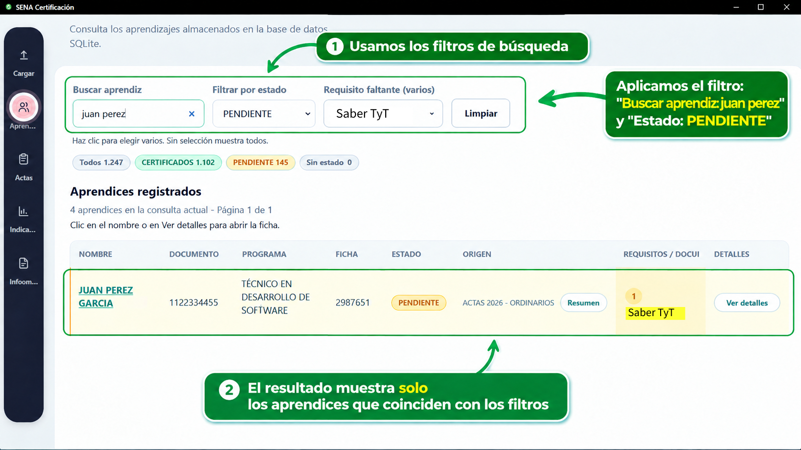
Pasos para localizar un aprendiz
Detalle del aprendiz y requisitos
Ficha individual: datos básicos, requisitos y seguimiento.
Desde el listado puede abrir la ficha de un aprendiz. Allí verá la información consolidada (identificación, programa, ficha, estado de certificación, instructor, etc.) y la sección de requisitos asociados al proceso de certificación.
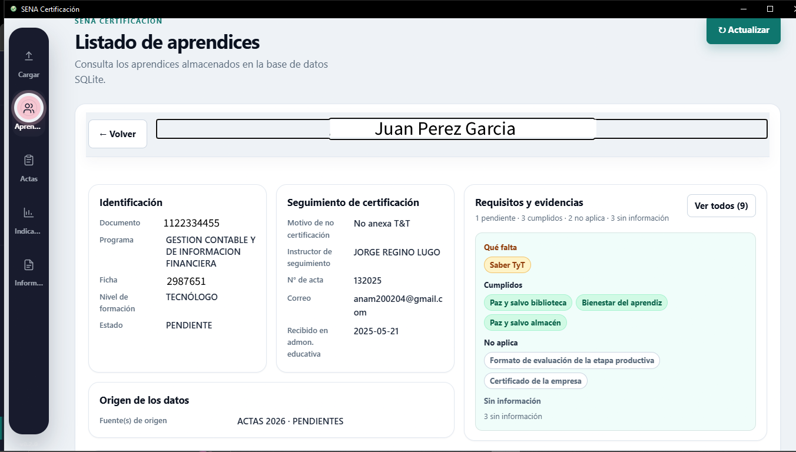
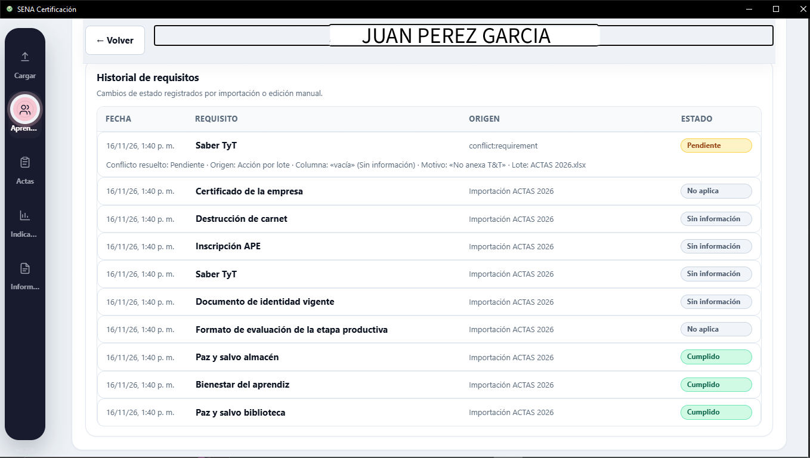
Qué puede hacer en el detalle
- Consultar datos de identificación, programa, ficha y estado.
- Ver el motivo de no certificación (si proviene de la hoja PENDIENTES).
- Revisar requisitos pendientes o registrados (documentación, etapa productiva, paz y salvos, Saber TyT, etc.).
- En algunos flujos, agregar o actualizar requisitos según los permisos y el diseño de la pantalla.
- Volver al listado con el botón «Volver» sin perder los filtros aplicados (según la implementación actual).
Gestión de actas
Registrar actas oficiales, consultarlas y asociar aprendices.
Las actas son documentos oficiales del proceso. En la aplicación puede registrar el número, la fecha, el tipo y el estado de revisión, y vincular los aprendices que figuran en el acta cuando la identificación es fiable.
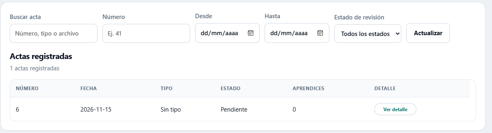
Pasos para registrar o consultar un acta
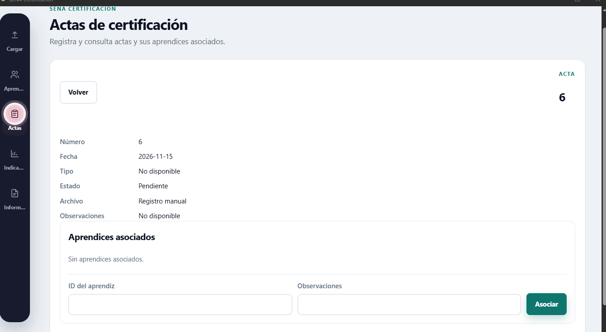
Indicadores de certificación
Consulte el avance del proceso a partir de los datos consolidados.
La vista Indicadores consolida la información importada para mostrar el avance de certificación: cantidades, porcentajes, desgloses por período y, cuando aplica, exclusiones de registros fuera del período o afectados por conflictos no resueltos.
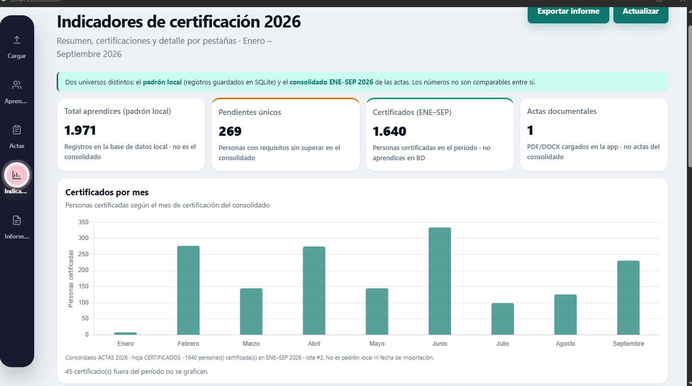
Qué suele mostrar esta vista
- Totales y avance de formación titulada y complementaria (según las fuentes cargadas).
- Certificados por mes u otros desgloses temporales.
- Relación con actas del período.
- Indicadores de causas o requisitos pendientes (cuando hay datos de la hoja PENDIENTES).
Informe de gestión administrativa
Redacte estrategias por trimestre, adjunte anexos y genere el DOCX oficial con las cifras del consolidado.
La vista Informe de gestión permite elaborar el documento institucional de la dependencia de Administración Educativa. Combina:
- Textos narrativos (estrategias o actividades) que usted redacta por año y trimestre.
- Cifras del consolidado ACTAS 2026 ya importado (metas, ejecución, avance).
- Anexos con imágenes (evidencias) ordenables, que se insertan en la sección de anexos del DOCX.
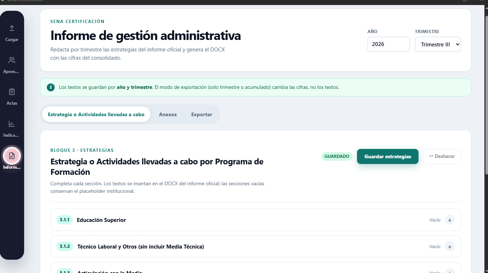
1. Elegir el período
2. Pestaña «Estrategia o Actividades llevadas a cabo»
Aquí completa las secciones narrativas del informe (por ejemplo 3.1.1, 3.1.2, 3.1.3…). Cada bloque muestra un contexto de cifras (meta, ejecución, avance) tomado del consolidado y un editor de texto con formato básico (negrita, cursiva, listas).
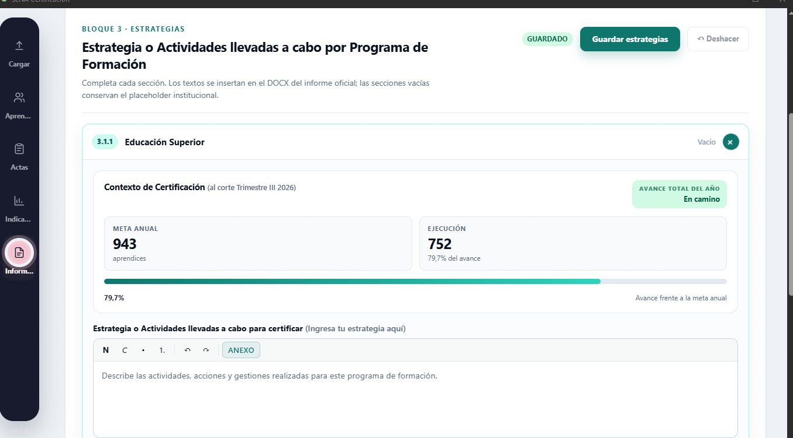
Pasos para redactar estrategias
3. Pestaña «Anexos»
Los anexos permiten incluir evidencias visuales (capturas, listados, actas escaneadas, etc.) en la sección de anexos del informe. Cada anexo tiene título, descripción opcional e imágenes.
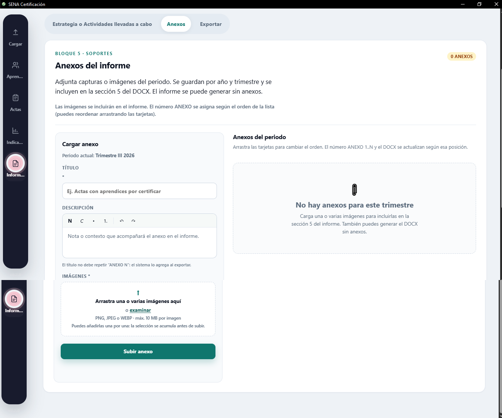
Pasos para agregar un anexo
4. Pestaña «Exportar»
Aquí genera el archivo Word (DOCX) del informe oficial. Antes de descargar, elija cómo se calculan las cifras.
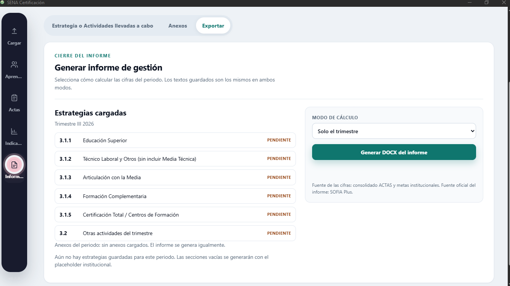
Modos de cálculo de cifras
- Acumulado hasta el trimestre (recomendado para el informe oficial): desde el 1 de enero hasta el último día del trimestre elegido (ej. T3 → 1 ene – 30 sep).
- Solo el trimestre: únicamente los tres meses de ese trimestre (útil para análisis del flujo del periodo).
Pasos para generar el DOCX
- Redacte en lenguaje institucional; no mencione el nombre de la aplicación como fuente de los datos en el cuerpo del informe.
- Revise conflictos CERTIFICADOS/PENDIENTES antes de exportar: afectan la ejecución de titulada.
- Conserve el DOCX generado junto con el consolidado del mismo corte para auditoría.
Exportes operativos desde Indicadores (complemento)
Además del DOCX de gestión, desde la vista Indicadores puede usar Exportar informe para descargar reportes operativos en PDF, XLSX o CSV (resumen ejecutivo, categorías, certificados por mes, causas, actas, consolidado, etc.). Esos archivos no sustituyen el informe institucional Word; sirven para análisis y seguimiento interno.